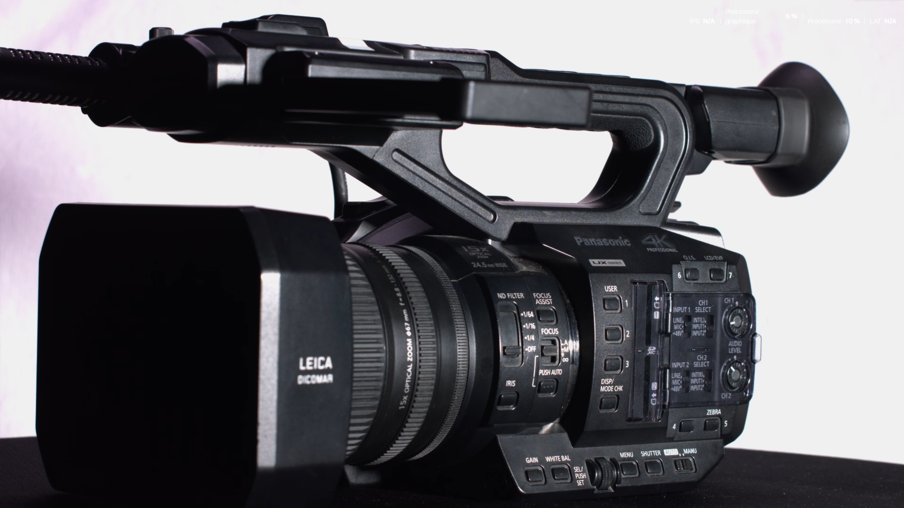
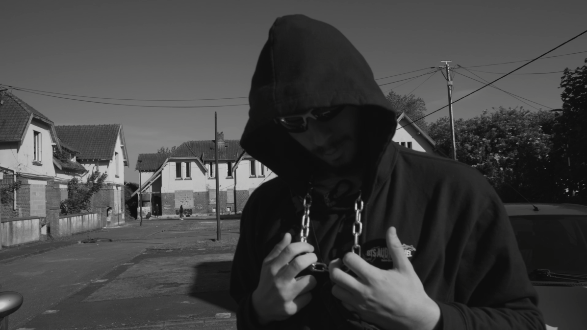
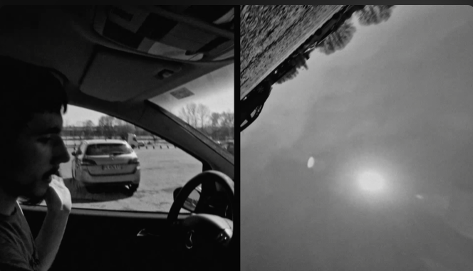

Bienvenue sur mon portfolio
À propos de moi
Je suis un technicien audiovisuel (Cadreur, Monteur, électro, ect...)
Je suis diplômé d'un bts audiovisuel en métier de l'image au Lycée Henry-Martin de Saint-Quentin
Mes Projets
Voici une liste de mes projets récents :

Une super Pub sur la UX90
Dans le Cadre de Mon BTS audiovisuel, jai réalisé en équipe une Pub sur la caméra de point UX90. Le bute était de de listé les charachéritique technique de la caméra en s'adressant à un public de technicien, tout en montrant quelque chose d'assez disigne et classe, inspiré par certaine pub de caméra et appareil photo du marché, ou encore des pub de parfum. Nous filmé en UHD à l'aide d'une Blacmagic Mini et des objectif varible; Nous avons choisi de tournée en 60ips un shutter à 1/120 pour pouvoir faire des ralenti sur nos plans et nous avons

Le clip de rap
Dans cette Parodie du clip Mentalité saine saint denis de JSK, nous voulions tourné un clip de rap en noir en blanc en 4h30 de tournage avec ma classe du bts, L'objectif etait de reproduire certain plan du clip original avec nos moyens. Le plus gros de notre travaille fût réalisé en post production car nous voulions vraiment que cela ressemble à un clip, un genre qe nous n'avions pas encore abbordé jusque la.

Split Scream
Ce cours metrage est un Double plan séquance en split-screan réalisé en noir et blanc dans le cadre d'un projet sur la thématique de l'horreur. Ici notre objectif était de réalisé avec notre matériel personel, un court metrage qui met en avant notre maitrise de certaine technique comme le plan séquance ou le split screan, les plans sont réélement tournée en meme temps mais n'ont pas la même durée grace à deux coupure invisible, et le plan de gauche use de deux changement de cadreur pour efféctuer un traverser de feunètre de voiture plutôt neutre.
Les 24H de la réalisation
J'ai participé à deux édition des 24H de la réalisation du bts de Saint-Quentin. Le but est de réaliser un court métrage ( Ecriture, tournage et montage ) en 24h avec un thème et une contraite imposé,